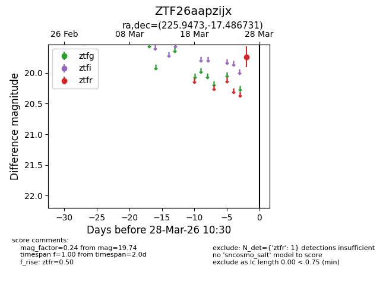
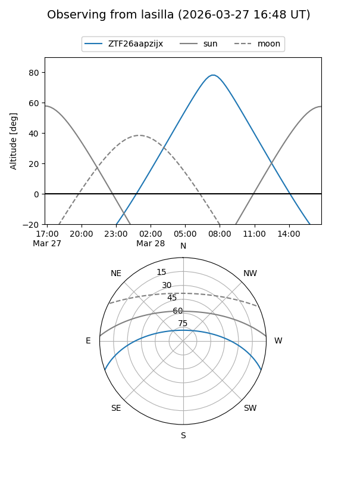
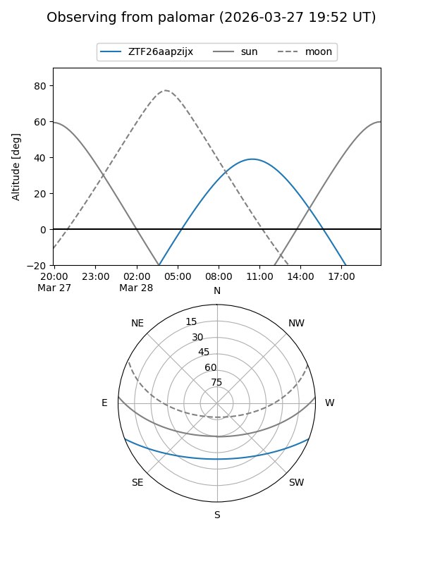

ZTF26aapzijx
Target ZTF26aapzijx at 2026-03-28 10:33
Aliases and brokers:
FINK: link
Lasair: link
ALeRCE: link
alt names
ZTF26aapzijx (ztf,fink_ztf)
Coordinates:
equatorial (ra, dec) = 225.9473,-17.48673
equatorial (HMS+DMS) = 15:03:47.36,-17:29:12.23
galactic (l, b) = (342.4249,+35.04270)
Flags:
Photometry:
last ztfr=19.74
1 ztfr detections
Lightcurve

Visibility


Additional plots